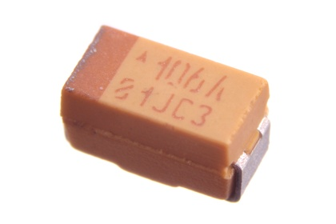
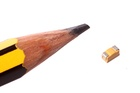
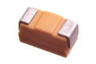

SMD (1206) 10 uF Capacitor (Tantalum) 10v - CTS1U010B

Summary
Name: SMD (1206) 10 uF Capacitor (Tantalum) 10v
ID: CAPT-1206-X-UF10-VB
Hex ID: CTS1U010B
WebPage: https://github.com/oomlout/oomlout-OOMP/wiki/CAPT-1206-X-UF10-VB
Short URL: http://oom.lt/CTS1U010B
Revision History: https://github.com/oomlout/oomlout-OOMP/blob/master/parts/CAPT-1206-X-UF10-VB/
| Type |
Size |
Color |
Description |
Index |
CAPT
Capacitor (Tantalum) |
1206
SMD (1206) |
X
|
UF10
10 uF |
VB
10v |
Images


About
This part is awaiting a description.
Specifications
| Info |
Value |
| Type |
Capacitor (Tantalum) |
| Size |
SMD (1206) |
| Description |
10 uF |
| Index |
10v |
| Width |
1.6 mm |
| Length |
3.2 mm |
| Maximum Voltage |
10 V |
| Tolerance |
10% |
Extra Details
Spotted a mistake, want to add more? Let us know oomp@oomlout.com
All images and resources are licensed [CC BY-SA] unless otherwise stated (ie. the datasheets)